颐和园
颐和园的垂柳像是给相机取景框的上沿加了刘海。
我想念未经雕琢的大地，云霭，湖泊，与树冠
在那里我可以毫无防备地会见未经雕琢的我
我与草叶，露珠，花蕊，烂泥，与清泉的距离
只有一次伸手，一次附身，一次低头
我用空旷的心配合天空的空旷
我用寂静的存在回应晨雾的寂静
我用澄澈的眼眸勾结月光的澄澈
我想念未经雕琢的失望，渴求，沉痛，与恐慌
在那里我可以衣衫褴褛地会见跌跌撞撞的我
我与释怀，或是更重的沉痛的距离相等
我与畅想，或是更深的恐惧的距离也相等
在难得的会晤中这两种距离皆是咫尺之遥：
只有一次暂停，一次呼吸，一次问答
我用错乱的意识协调时空的错乱
我用失调的头绪校准现实的失调
我用离奇的思想修补万物的离奇
人类语言败下阵来的世界，既是奢侈的，又是可怕的，既是自由的，又是煎熬的。
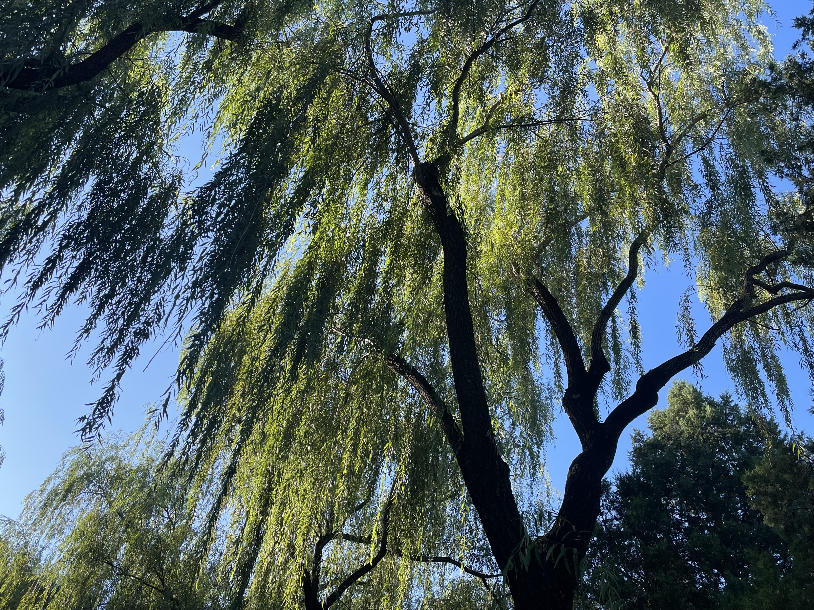
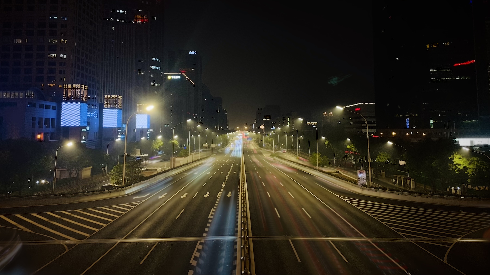
蜀地
我曾经想看冷雨，青松，雾霭氤氲，和古刹森严。
在黄龙，这些意象都看到了。雨后的晨雾，仙气缭绕，山体遍布松柏，道教寺庙隐藏其中，屋檐两侧翘起来，翘出中式建筑的灵魂。
我很爱这些意象，而令我不爱的，是看到那些厚重，高尚，有内涵，有神性的事物仅仅浅显的流露，被切割成碎片，被蒙上磨砂玻璃，
只渗透出一个可以用手指拈起的体量以满足众多游客小的可怜的胃口。可我无法阻止自己看到这些，更无法阻止自己在看到这些后感到不可言说的损失。
我感到的不只是我的损失，还有他人的损失。这听起来像是把损失强加于他人。的确很多个他人大约从未有机会体会我在念叨何物。
我俯身让自己的脸颊碰到栈道旁边的灌木。我想让我的存在更加溶进它们的存在。
每当我做这样的动作，总是喜出望外看到叶片上的什么生物。有时它们色彩奇艳，提醒着我走马观花的收益是大量的错过。
柏树的针叶前端忽然有一段浅绿，仿佛是双色拼接而成。老气横秋的枯叶吊在枝头分叉处，叶柄衔着一颗水滴。
在九寨，依旧没有机会体验我理想中与自然的亲近。但是九寨的水的美丽程度让我愿意把这失望一笔勾销。
连续两天进沟，每天8小时，晚上出沟回到酒店房间后闭上眼睛，看到的全是山水画 ——
由白色，蓝色，和绿色组成的山水画 —— 当中景致随着我睁眼又闭眼不停切换。
有时我看到的是水底一块一块的水草和苔藓还有木本植物的根部聚成的小洲。
有时视野里全是水，正中央出现三两条横着的断纹，如同几节台阶，水流翻跃而下。
有时我看到的是澄澈的池水，一半碧蓝，一半因为倒映了天空呈白色，干枯的树干直立于水中，
水面悄不做声地荡漾，若不细看，便察觉不到波纹。远黛隐于遥雾，高处不胜寒的雾气正谨慎地寻着下山的路。
洗脸时我又闭上了眼睛，视野里开始显示孔雀蓝和翡翠绿色，如一条玉带游进树林，
树木立在水中，如同在摇篮中一般安心。对面的山体上针叶树平静地伫立着，不知它们是在仰视山峰还是在俯视瑶池。想必它们必定精神上过的极富足。
下一次闭上眼睛，流水携带者水草沿着圆滑的巨石表面倾泻而下，
如同染了色的披肩发：诚挚的蓝，闪耀的黑，不争不抢的白和慢条斯理的绿，拥挤着并肩奔腾。
再次，是彩林，池水对面的彩林，近处是一团团小朵浪花，晶莹剔透，徐徐渐进。
再后来又重现了微微摇曳的枝干落在水面上的倒影，枝干和叶子都是黑色的，如同以水面为宣纸作水墨画。
水已经抢占了所有的颜色，天空觉得自己没有必要蓝，叶子也觉得自己没有必要红。
水流奔向每一道地势更低的印，都沿着最不需蛮力的路前行，坦然得不必辩解。苔藓近距离见证了什么叫做强劲有力的“不争”。
它们汇入更宽阔的河流，而河流从不追问它们是否属于此处。
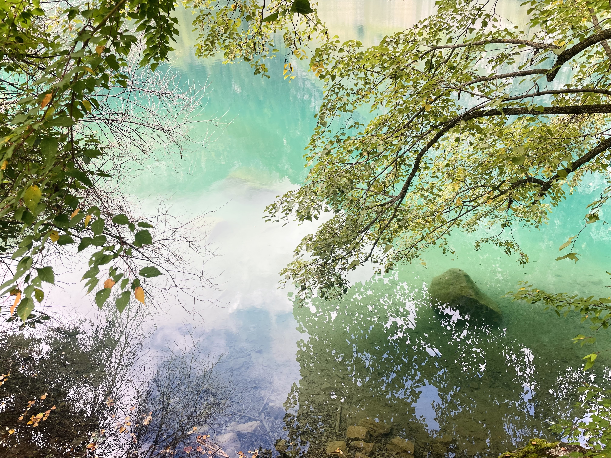
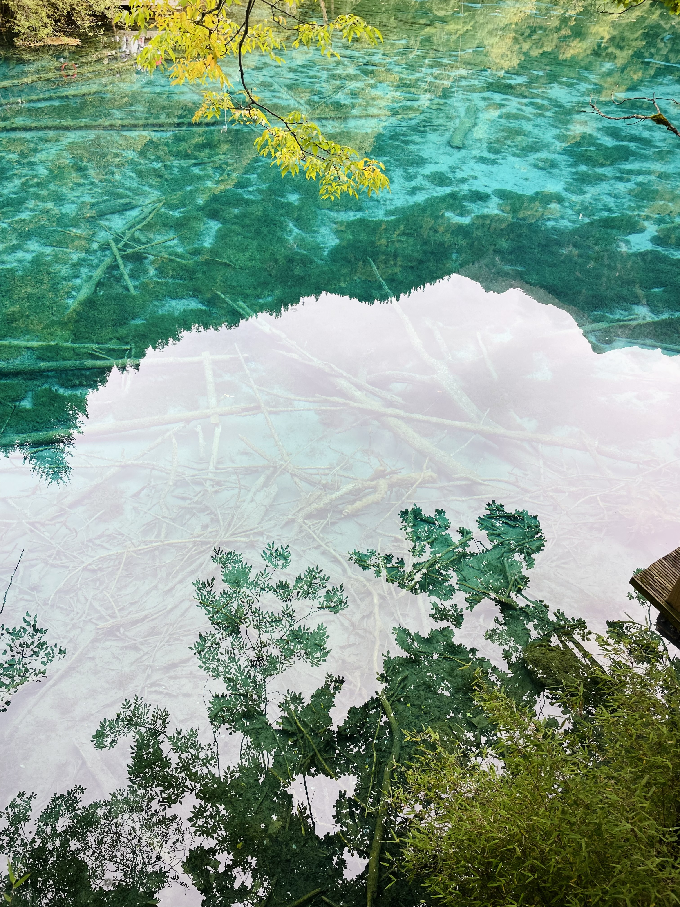
诡谲
在三星堆，偶然得知，在甲骨文中，“臣”的符号是将“目”的符号竖转90度。我接到了来自上古的启示：作为臣子，我们都是神明的眼睛。
很多时候，产生这些诡谲多变的思想的引擎，都会被束之高阁，轻易访问不到。挥霍完了平稳的日子，生活一颠簸，反倒把它颠下来了。
月色清冷的夜晚和文字作伴。飒飒秋风的寒意让我陡然认识到了温热的难得。
若一个人难得幸运到拥有看见虚幻的能力，那么我愿他也能同样幸运地拥有看见希望的能力 ——
即便是那种从废墟，坟墓，和肮脏的粪土中刨出的希望.
否则，他看到的世界将会有多么大的颠倒和失调！
那个自相矛盾的典故此时迎来了新的解读。看见虚幻，和看见希望的能力，一个是矛，一个是盾。
若你用看见虚幻的能力去审视希望，那么你将轻而易举把希望视为虚幻。
所以我愿你能调转方向，用看见希望的能力去审视虚幻。
或许，你可以看到一座飘渺的蜃楼。在这景致面前，你轻声吩咐那犀利的判官先退下，容自己在一番虚景中先畅想和沉醉几分几秒。
鲁迅说：“假使没有看出出路，那么先不要叫醒沉睡的人。”
因为醒来的人是要负重前行的，不是因为他们高尚，而是因为他们已经看清这局面：自己的前路是在没有路的土地上行走。
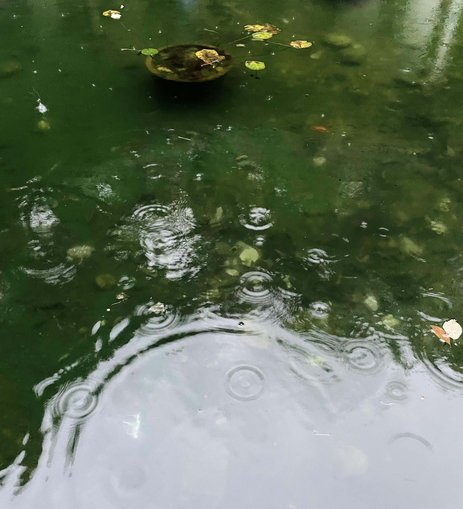
福气
借小河古村之缘，赏识了一位颇令我仰慕的作家，石评梅。
读她的字句，需要做一些特意的心理准备。否则，她充沛到漫溢的感情，碰上我目光里的易燃物，会引发生石灰碰到水的局面。
她说她自己软弱无用，那是因为她比世人更能体会百倍的脆弱与柔软。
她说她自己悲观厌世，那是因为她比世人更能看见百倍的悲怆与凄凉。
她说她自己矛盾悔恨，那是因为她比世人更能觉察百倍的浩瀚与困厄。
她因囿于肉身，所以痛苦。在这痛苦之上，我愿还有一层感激和震撼。
这具因为脆弱所以局限的肉身，本不必拥有触摸永恒的福气。
有幸拥有这福气的人，是在复杂和荒诞中穿梭游走的翩跹的舞者。
我也可能就此坠落。
我也可能被自己的怨恨和悲伤羁绊，反受其害。
我有能力尝到温热被冻结的滋味。我已回不到双眼紧闭的状态。
总有无力感生猛地闯进视线里来。
无力感并非悲观，尽管旁观者很容易将它视作悲观，甚至斥为“灵魂的疾病”。
我的恐惧并非无端，我的规避也并非无端。
在一池情感中戏水，时常让我快乐。
但我时常要提防失去掌控而溺水。池底是希望照射不透的淤泥。
石评梅在《父亲的绳衣》一文中写道：“有一个时期我也曾做过英雄梦，想轰轰烈烈，掀天踏海地闹一幕悲壮武剧。
结果，我还未入梦，而多少英雄都在梦中死了，也有侥幸逃出了梦而惊醒的，原来也是一出趣剧，和我自己心里理想的事迹绝不是一件事，
相去有万万里，而这万万里又是黑黯崎岖的险途，光明还是在九霄云外。”
我想我极易犯那个我痛恨的错误，那就是让他人觉得，品尝绝望是不被允许的，因为绝望貌似和腐朽串联。
我试图带着对这个错误的警惕，对她讲话。讲出来的话听来，又多么像在说给温热被冻结后的我听！
我已分不清我是讲话的人，还是听话的人。正如李健吾在《悼石评梅先生》中写道：“她送出她的同情去冒险”，我已分不清话里的“她”是谁。
旧时的她感到被落下了，苦恼于看到的当下和看到的未来之间的万万里。另一个她或许追着九霄云外就去了，因为腐朽是让生命延续的沃土。
而且她想，眼里有这个愿景，也不必要真的抵达。主要是有这个愿景即可。
因为她真正需要的是一个能让她迈完一步还愿迈下一步的动力。至于那个万万里，只不过是一种带有安慰剂效应的期许，期许有一天，沉睡的人被叫醒，已无大碍。
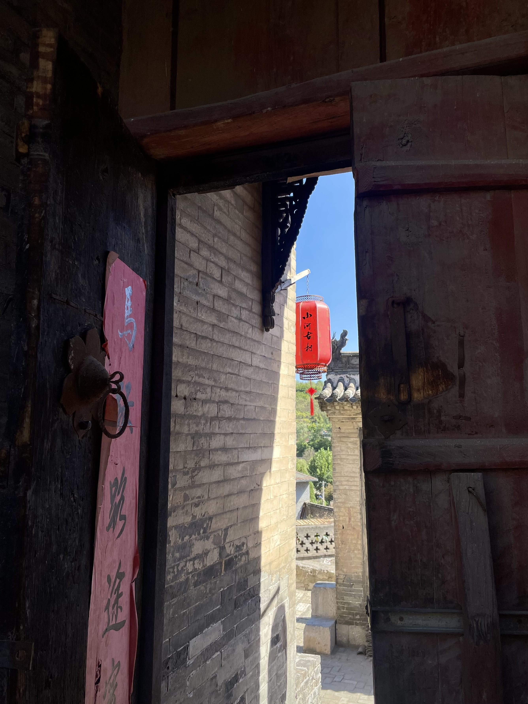
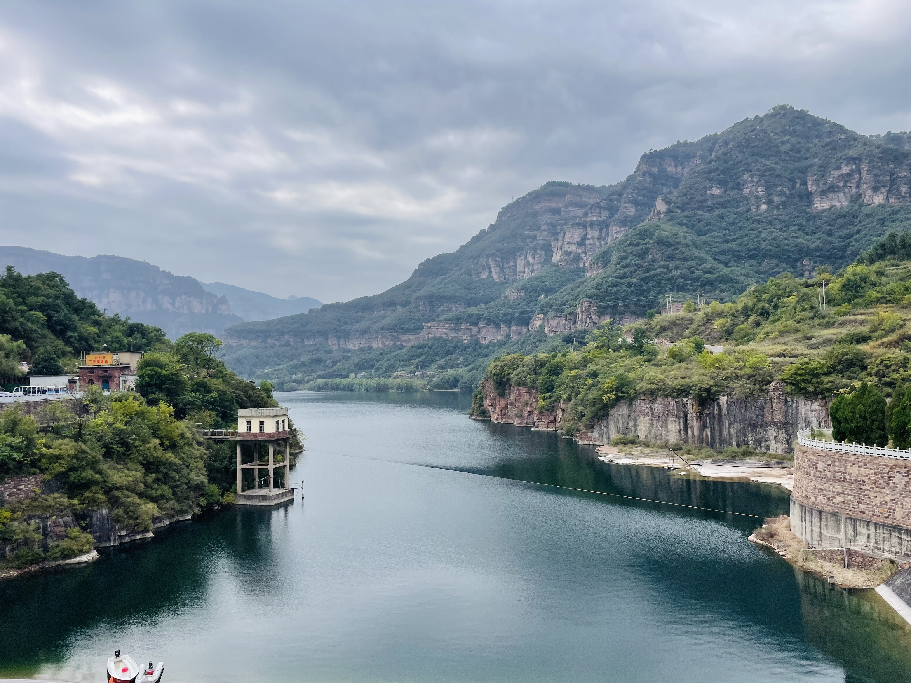
杏花
以游客身份过了一天，但内心不仅仅是以一位游客的视角阅读这个地方。
下午参观了两座最著名的博物馆：荷兰国立和梵高。
在荷兰国立博物馆屋顶超高的宫殿般的建筑里，我盯着色彩，线条和用颜料悉心打造的光影，感到一种陌生和隔膜。
我细想，究竟是哪方面的异样在背后捏造出了隔膜？
一句回答不请自来：西方的绘画没有留白。
笔触和颜料经常覆盖整幅画，很多时候不止覆盖一次。于是显得厚重，闷，腻，过于庄严，甚至过于神秘化。
呈现在画布上的背景不像是一种天然的背景，而是被可以涂抹捏造出来的背景。对比之下，中式绘画最大的特点就是留白带给人的轻盈飘渺之美。
后来参观梵高博物馆，多得到了些许舒适。我喜欢梵高的个人人格，即便，我看梵高就不得不了解他生存的时代，
无法停止看见殖民主义时代金钱和权利至上的丑恶。这一点是不利于我作为观赏者体验艺术的。因为当我但凡想到艺术是富商攀比和彰显地位的游戏，
就会抵触去了解这些历史和文化，以及随后的“以史洞见人心”的体验更是被生生阻断。
但我不需要急着给荷兰乃至欧洲大陆上的文明下一个判断。我想从收集单个拼图碎片开始，而不是总想着每个碎片应该落在整张拼图的什么位置。
记得PhD末尾我幡然醒悟：可以对“为何年迈学者会对初出茅庐的学者展现出远超于期望的热情”作出解释的关键词，是希望。
在这个体系里，老人会在年轻人身上看到超出自身生命尺度的巨大的希望：你将踏入的未来是命不久矣的我不能有幸看到的，但是你将会看到，
甚至，你将会创造出它。那未来向来只活在我的预测和憧憬里，但它将在你的生命里成为现实。
反之，年轻人会因为自己继承了打破肉体边界的期盼而感到前所未有的感恩：在自己之前来过的人，会在自己还在向前狂奔的时候停止陪伴，
化成向上的浮力支持一个游荡已久的梦。在希望的两端，都是馈赠。而每个个体，会在自己的一生中从进度条的左端 —— 因为自身承载了他人的希望，所以享受自己不曾开口索要过的特权 ——
滑动至最右端 —— 因为跑在自己生命限度之外的希望将继续被呵护，所以享受惺惺相惜的慰藉。
杏花是梵高生命最晚期的作品。博物馆导览鼓励访客在画前多站立一会儿，捕捉视觉画面触发的感觉。我装模作样地“品读”。
我捕捉到的，或许是这个希望的进度条拉到最右端时希望从特权大面积倾倒向慰藉的感受。
一个感受力极强的人，在看到他人感受痛苦的时候，也许会得到欣慰，因为终于有一个人携带着也许能与自己相称的感受力。
否则，他将觉得自己偌大的内心版图，仿佛四面环山的盆地，没有一条路能翻向山的另一面。
是的，他可以通过艺术来表达，期待着这些表达会像飞鸟一样捎信到山外。
梵高将麦田绘成仙界：没有空隙的金色大地，铺满了流动的信仰。
群起的乌鸦是拒绝当前信仰而面向未来的逃客。它们也是信徒，只是它们信一个还未落地的漂浮物。
梵高的向日葵时常在现代大众文化里被用来鼓舞人们向阳而生。可那是多么绝望暗黑的深渊才需要如此这般刺眼的炙热来勉强聊以慰藉？
曾经去过一个梵高沉浸式全景体验馆，在那里也看到过杏花。那时觉得色彩过于明丽，超出常规视觉体验，
有离奇幻梦之感。向日葵与杏花，一个极致的炙热，一个极致的冷艳。可当我们把它们均放在审视生命的滤镜之下时，它们又展现了色彩对立之上的共性。
这两幅画，若我们追溯到画家落笔之前，是什么样的情绪萌生了这番表达？想必在这两幅画落笔之前已经流淌已久的情绪是同源的。这个源，是盛放。
无论在怎样的背景之下，盛放终归是毫无保留，毫无修饰，毫无遮掩的。如同金色的麦田里千万株在风中齐刷刷地向一个方向倾斜。
梵高热爱麦田，因为它的广袤令他惊叹。在他的自画像里，胡须的笔触，毡帽的笔触，毛发的笔触，衣领处褶皱的笔触，乃至皮肤上光泽的笔触，莫非还是麦田？
他把流动的麦田画成自己的肖像，背景笔触旋转，营造出宇宙宏大之感。肖像中的眼眸在星月夜里流连，然后瞳孔散发的光芒又是在肖像里内置的星月夜。
若我要提炼简短几个字来形容我从画中看出的感觉，那最恰当的便是“渴望生命” 。在博物馆的书店拿起一本《梵高语录150条》，
读了几句便认定这是我喜欢的人格。我想去读他的传记。
“哦”，我想，“我曾经在书单里收藏过他的传记（事实上是由他的生平为原型的传记体小说），我记得题目，是什么来着？前几分钟我还觉得那题目在记忆里闪现过”。
哦，梵高传的题目，正是《渴望生命》。
昨晚降落在阿姆斯特丹，不幸逢凄风苦雨。今天导师来邮件说为我的到来欢迎的聚餐已定，
随后还附上一句：“阿姆斯特丹的天气并不是每天都像今天一样的。”
从博物馆出来在广场上慢慢地走。发丝随着瑟瑟的风想要私奔。太多熟悉的事物被我置在了身后。想来，唯一跟随着我的熟悉之事，就是曾经也数次光顾且穿行过的陌生感。
我又回到了那个状态：一个旅人，一个不熟悉风土人情的人，一个小心摸索的人，一个心里没底的人，一个站在风中，一面的斜阳和另一面的流云都未曾用脚步丈量过的人，
一个吸食着秋光却没有“去年此时此地，此情此景”作为参照和怀旧之窗口的人。
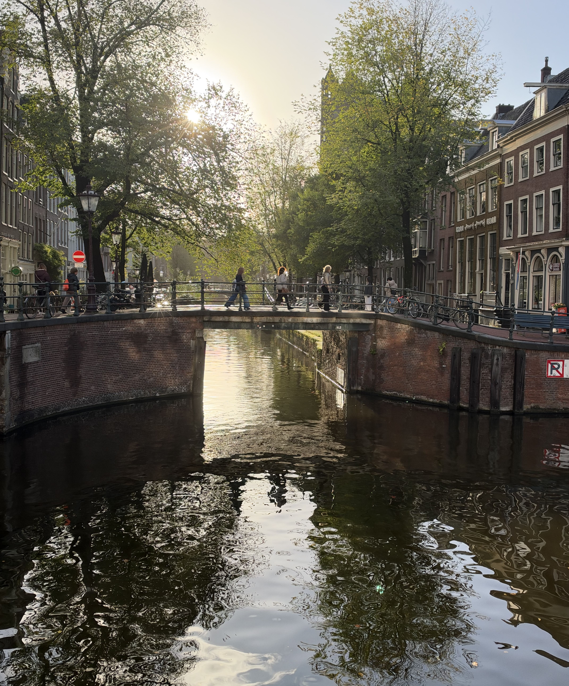
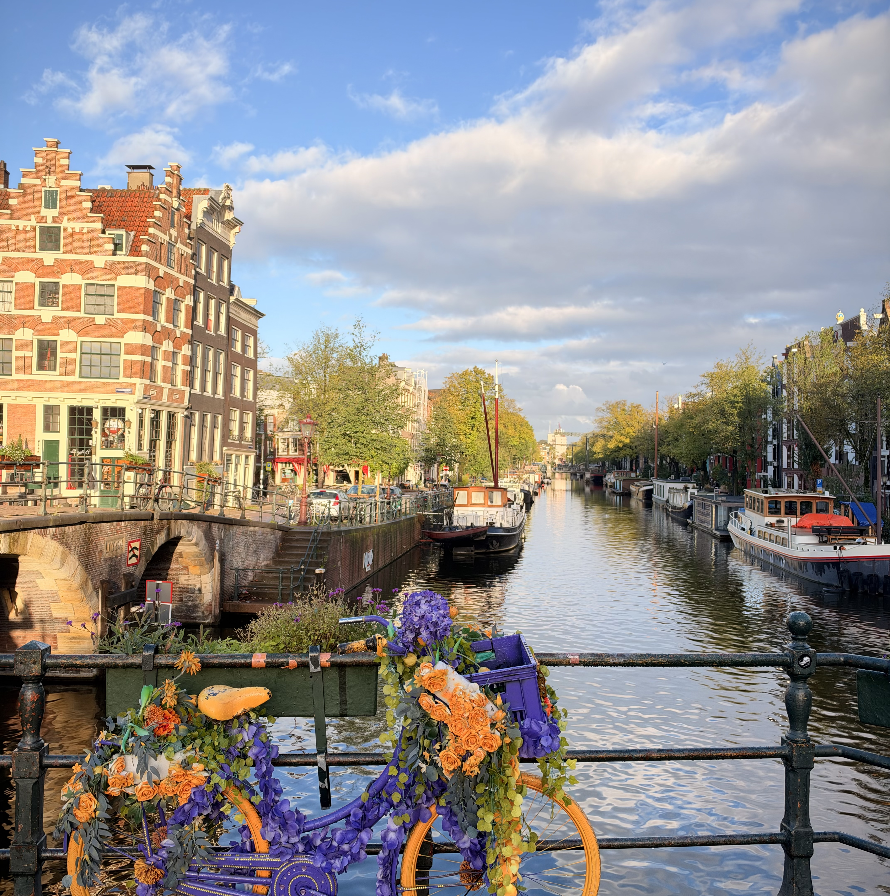
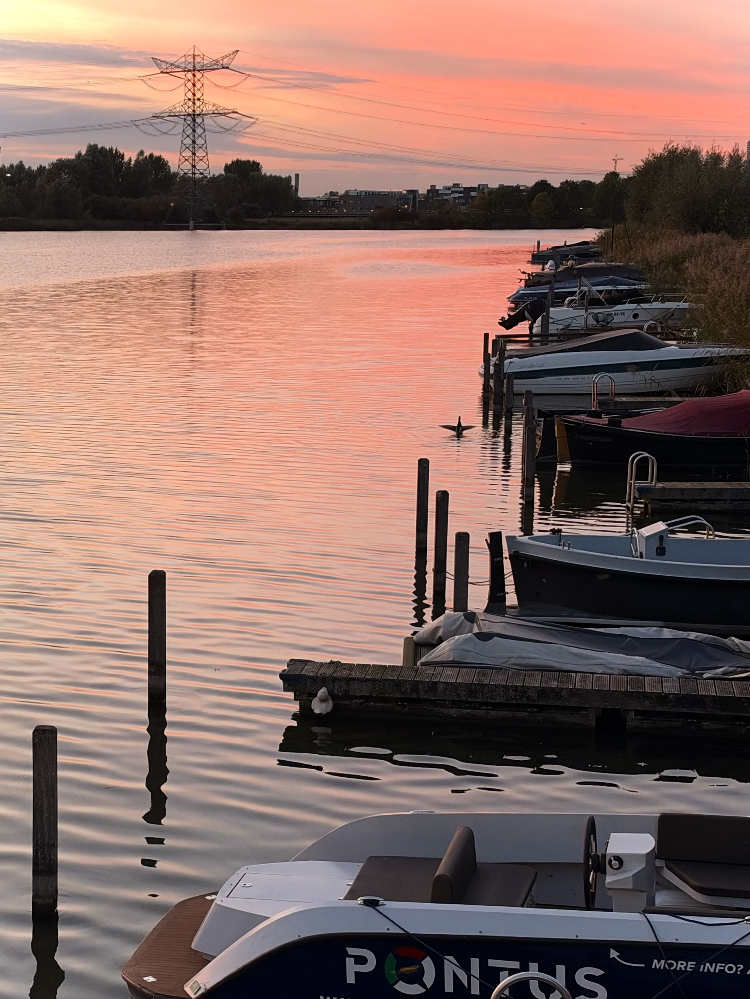
积水
对匹兹堡的记忆收尾在了盛夏。
盛夏，与凌冬一样，是懒洋洋的，是静悄悄的。要么是噪音在这些时候更加易溶于空气，要么是天地间贸然多出了许多其它噪音的溶剂。
今年可能过不上秋天，我想。离开北京之后，大约只能赶上阿姆斯特丹的晚秋。
博士答辩之后在匹兹堡的时光寥寥无几，我沐浴着它如同沐浴“后末日时代”的黎明。
自由的感觉是触不可及的。一个不请自来的美丽画面，就足以令我对非洲的日落移情别恋。我由衷地羡慕来势汹汹的艳红。
在太白湖畔散步的时光仿佛是用火中取栗之巧技抢夺来的。自豪的感觉是广大而稀薄的。
一段生命来日将化为湖中的倒影。前日我走到湖边，问候水波的荡漾。在黢黑的夜幕下，我被细风托举，轻盈得像一粒沙。
而后，载着我的飞机倏地从欧亚大陆北部边沿飞越了俄罗斯。这个我已经签订了合约要把自己三年的存在和思索交付给的地方，
还不知道要载着我去向哪里。自由的感觉是措手不及的。运河多的地方，人们善于建桥和过桥。想必我的命运里早就被钦定了运河条条。
支离破碎的岛，本不必然相连，只能靠运河和桥黏合。是我在不厌其烦地修桥与过桥。
当前棘手的困境，是由于我已经通过了可以解锁它的关卡。自豪的感觉是危机四伏的。
砖块铺就的路上坑洼的部分积满了水，很容易判断雨变大了还是小了。因躲雨而临时进来消费的咖啡厅现也因为客人变多窗户上结满了雾气。
前月的自己误判了，现在仍是阿姆斯特丹的早秋。今日的雨，无风。叶子还没有变黄，每棵树的树梢都好似接到了命令，在没有颜色的天空中安稳地打坐。
通向迷你码头的木板前端立着两根矮柱，柱上标着三个“x”号。据江湖上未经考证的传言，这三个叉号代表荷兰史上三大创伤。我感觉我的个人史上的创伤们对三个叉号席位的竞争一定很精彩。
窗玻璃上的雾气更重了，我已快看不清窗外的雨势。
桌上的标识写着本桌不允许用电脑 —— 应该用来享受人与人的连接，或单纯用来享受手中的饮品。
恰好，今天有太多情感需处理，本就打算在非旅游区寻一个角落写作。
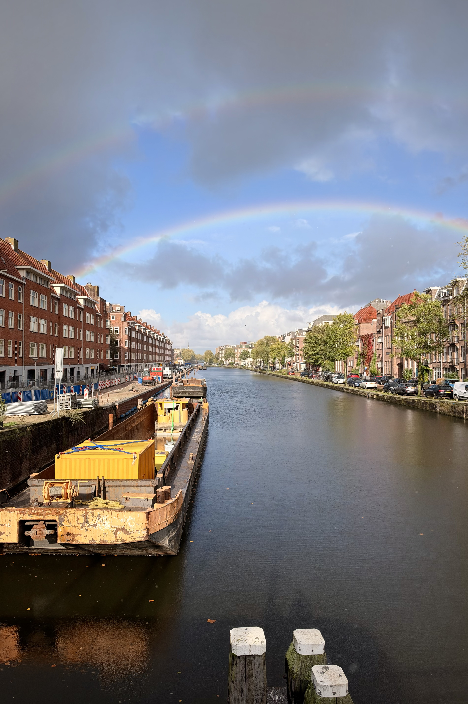